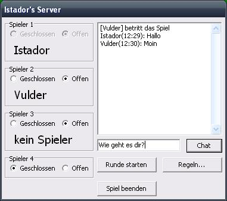

Spiel verwalten

In der Spielverwaltung können Sie das Spiel einstellen und sich vor einer Spielrunde mit den Mitspielern unterhalten.
Über die vier Spielerabschnitte in der linken Seite des Fensters können Sie Spieler-Plätze öffnen oder schließen.
Nur wenn ein Platz geöffnet ist, kann ein Spieler beitreten, sonst nicht.
Tritt ein Spieler dem Spiel bei, so wird sein Name angezeigt.
Falls Sie nicht möchten, dass dieser Spieler mitspielt, können Sie seinen Platz schließen, und der Spieler wird aus dem Spiel entfernt.
Über die Schaltfläche Regeln... gelangen Sie in die Optionen, in denen Sie die Regeln für das Spiel ändern können.
Regeländerungen treten grundsätzlich erst in einer neuen Runde in Kraft, nie in einer Laufenden.
Andere Spieler werden über Regeländerungen informiert.
Die Schaltfläche Runde starten erlaubt es Ihnen, eine Spiel-Runde zu starten, vorausgesetzt Sie sind nicht alleine und es sind keine Plätze offen.
Ein laufendes Spiel können Sie als Spielersteller jederzeit im Hauptmenü über Spiel -> Runde beenden schließen.
Dies kann unter Umständen nötig sein, bei auftretenden Fehlern oder bei Abwesenheit eines Spielers.
Beim Beenden einer Runde wird das aktuelle Spiel verworfen und Sie gelangen zur Spielverwaltung.
Über die Schaltfläche Spiel beenden oder während eines laufenden Spieles im Hauptmenü unter Programm -> Spiel beenden oder mit einem Druck auf die Taste F2 können Sie das Spiel beenden.